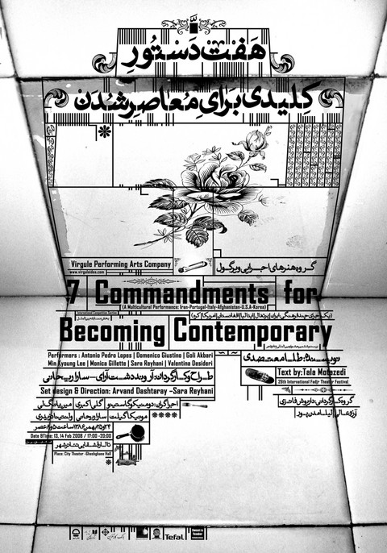
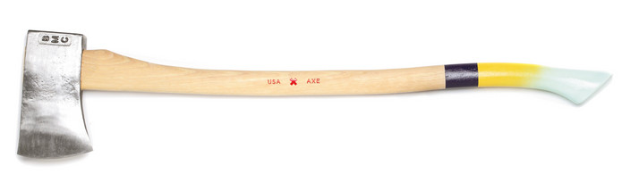
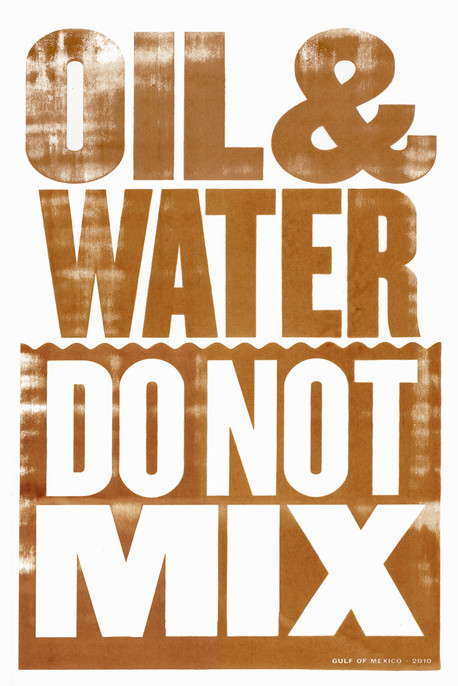
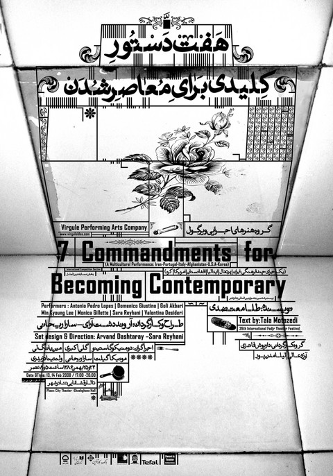
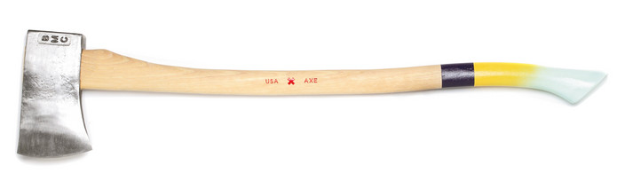
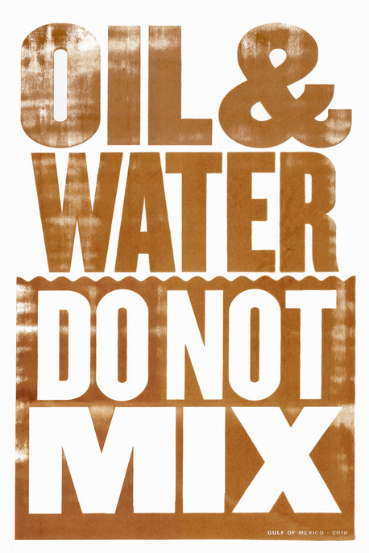

 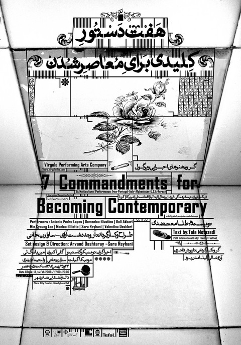
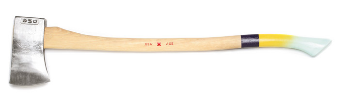
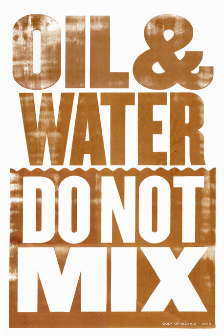
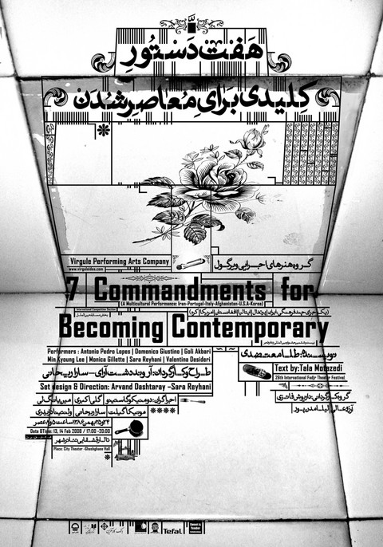
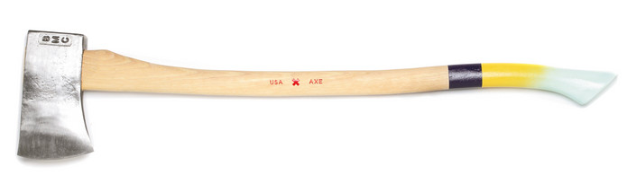
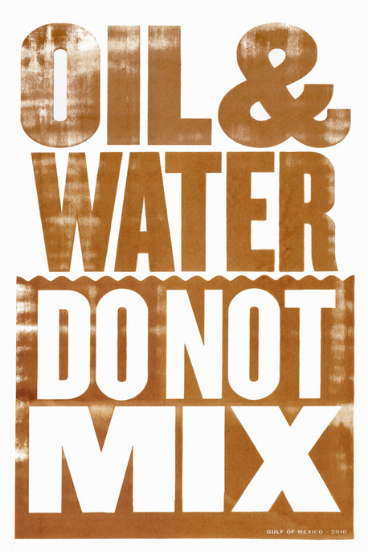
Graphic Design: Now in Production is co-organized by the Walker Art Center, Minneapolis, and the Smithsonian’s Cooper-Hewitt, National Design Museum, New York. The exhibition is co-curated by Andrew Blauvelt, Chief of Communications and Audience Engagement and Curator of Design, Walker Art Center, and Ellen Lupton, Senior Curator of Contemporary Design, Cooper-Hewitt, National Design Museum.
Special thanks:
Rhode Island School of Design Department of Graphic Design
risdmuseum.org: Graphic Design: Now in Production
Designers use color, typography, images, symbols and systems to make the surfaces around us come alive with meaning. The revolutions in desktop computing and networked communication have raised public awareness of graphic design. Today, the field continues to shift as new technologies and social movements change the way we make and consume media.
Graphic Design: Now in Production explores some of the most vibrant graphic design work produced since 2000, including magazines, newspapers, books and posters; the expansion of branding programs for corporations, institutions and subcultures; the entrepreneurial spirit of designer— produced goods; the renaissance in digital typeface design; the storytelling potential of film and television titling sequences; and the transformation of raw data into compelling information narratives
Critical Encounters with Type, Image and Print
Curators of Graphic Design: Now in Production, Andrew Blauvelt and Ellen Lupton, along with graphic designers, Jessica Helfand of Winterhouse Studios and Prem Krishnamurthy of Project Projects, engage in discussion with RISD faculty. In response to questions posed by Graphic Design students, these designers and innovators debate the past, critique the present, and imagine the future of graphic design by using the design-driven magazines, books, posters, branding programs, typography, titling sequences for film and television, and information graphics in the exhibit.